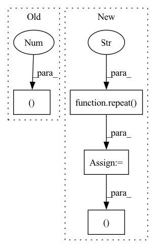

Pattern ID :24757
Before Change
padding = seq_len - n
mask = default(mask, lambda: torch.ones(b, n, device = device).bool())
x = F.pad(x, (0, 0, 0, padding), value = 0)
mask = F.pad(x, (0 , padding ), value = False)
qkv = self.to_qkv(x).chunk(3, dim = -1)
q, k, v = map(lambda t: rearrange(t, "b n (h d) -> (b h) n d", h = h), qkv)After Change
causal_mask = torch.ones(i, img_size, device = device).triu_(img_size - i + 1).bool()
causal_mask = repeat(causal_mask, "i j -> b i j", b = bh)
mask = repeat( mask, "b j -> (b r) i j" , r = (bh // b), i = i)
mask = torch.cat((~mask, causal_mask ), dim = -1)
dots_image.masked_fill_(mask, mask_value)
In pattern: SUPERPATTERN
Frequency: 3
Non-data size: 4
Instances Fragment ID: 76620881
Project Name: lucidrains/dalle-pytorch
Commit Name: c27f48c4373942167a0cc2ac2238f67af2479fe3
Time: 2021-02-14
Author: lucidrains@gmail.com
File Name: dalle_pytorch/attention.py
M Class Name: SparseAxialCausalAttention
N Class Name: SparseAxialCausalAttention
M Method Name: forward(3)
N Method Name: forward(3)
M Parent Class: nn.Module
N Parent Class: nn.Module
M File Name: dalle_pytorch/attention.py
N File Name: dalle_pytorch/attention.py
M Start Line: 191
M End Line: 241
N Start Line: 201
N End Line: 259
Before Change
padding = seq_len - n
mask = default(mask, lambda: torch.ones(b, n, device = device).bool())
x = F.pad(x, (0, 0, 0, padding), value = 0)
mask = F.pad(x, (0 , padding ), value = False)
qkv = self.to_qkv(x).chunk(3, dim = -1)
q, k, v = map(lambda t: rearrange(t, "b n (h d) -> (b h) n d", h = h), qkv)After Change
// concat text mask with image causal mask
causal_mask = repeat(causal_mask, "() i j -> b i j", b = b * h)
mask = repeat( mask, "b j -> (b h) i j" , i = i, h = h)
mask = torch.cat((~mask, causal_mask ), dim = -1)
// image can attend to all of text
Fragment ID: 76620883
Project Name: lucidrains/dalle-pytorch
Commit Name: c27f48c4373942167a0cc2ac2238f67af2479fe3
Time: 2021-02-14
Author: lucidrains@gmail.com
File Name: dalle_pytorch/attention.py
M Class Name: SparseConvCausalAttention
N Class Name: SparseConvCausalAttention
M Method Name: forward(3)
N Method Name: forward(3)
M Parent Class: nn.Module
N Parent Class: nn.Module
M File Name: dalle_pytorch/attention.py
N File Name: dalle_pytorch/attention.py
M Start Line: 92
M End Line: 154
N Start Line: 92
N End Line: 164
Before Change
// relative positional encoding (T5 style)
if exists(attn_bias):
attn_bias = F.pad(attn_bias, (1, 0 ), value = 0.)
sim = sim + attn_bias
// maskingAfter Change
// relative positional encoding (T5 style)
if exists(attn_bias):
null_attn_bias = repeat( self.null_attn_bias, "h -> h n 1" , n = n)
attn_bias = torch.cat((null_attn_bias, attn_bias ), dim = -1)
sim = sim + attn_bias
// masking Fragment ID: 76620877
Project Name: lucidrains/imagen-pytorch
Commit Name: a5f39273e51567940e20ee9b297a9f03f4ed3435
Time: 2022-08-17
Author: lucidrains@gmail.com
File Name: imagen_pytorch/imagen_video/imagen_video.py
M Class Name: Attention
N Class Name: Attention
M Method Name: forward(5)
N Method Name: forward(5)
M Parent Class: nn.Module
N Parent Class: nn.Module
M File Name: imagen_pytorch/imagen_video/imagen_video.py
N File Name: imagen_pytorch/imagen_video/imagen_video.py
M Start Line: 415
M End Line: 415
N Start Line: 417
N End Line: 418